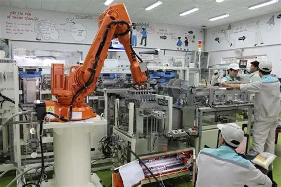
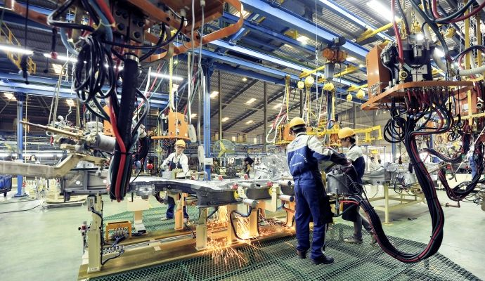

<!-- Enhanced Skills Section - Technical Arsenal -->
    <section class="content-section" id="WhyToPass">
  <div class="container">
    <header class="section-header">
      <h2 class="section-title">Câu hỏi CQ</h2>
      <p class="section-subtitle">Lý giải tính tất yếu của giai đoạn quá độ lên chủ nghĩa xã hội.</p>
      <div class="tag-chips">
        <span class="chip">Quá độ</span>
        <span class="chip">Tất yếu</span>
        <span class="chip">Phát triển</span>
      </div>
    </header>

    <div class="alternating-layout-container">
      <!-- Row 1 -->
      <div class="content-row reveal">
        <div class="text-col">
          <article class="feature-card">
            <div class="card-header">
              <span class="card-kicker">Khái quát</span>
              <h3 class="card-title">Hai nấc thang phát triển</h3>
            </div>
            <ul class="checklist">
              <li>Hai hình thái giống hai nấc thang phát triển xã hội.</li>
              <li>Bậc 1: Xây nền tảng vật chất – tích lũy, xây dựng cơ sở hạ tầng, nâng cao kỹ năng con người.</li>
              <li>Bậc 2: Giai đoạn lý tưởng – khi nhu cầu của con người được đáp ứng đầy đủ.</li>
              <li>Ví dụ minh họa: trong học tập phải nỗ lực rèn luyện trước khi đạt kết quả; xã hội cũng vậy.</li>
            </ul>
          </article>
        </div>
        <div class="image-col">
          
        </div>
      </div>

      <!-- Row 2 -->
      <div class="content-row reveal">
        <div class="text-col">
          <article class="feature-card">
            <div class="card-header">
              <span class="card-kicker">Lý do</span>
              <h3 class="card-title">Tính tất yếu</h3>
            </div>
            <ul class="checklist">
              <li>Kinh tế: cần động lực phân phối theo lao động để nâng năng suất, tạo nguồn lực tái đầu tư.</li>
              <li>Con người – ý thức xã hội: rèn trách nhiệm, kỷ luật, tinh thần cộng đồng.</li>
              <li>Điều kiện kỹ thuật: phát triển KH-CN, tự động hóa, hiện đại hóa sản xuất.</li>
            </ul>
            <div class="pill-row">
              <span class="pill">Kinh tế</span>
              <span class="pill">Con người</span>
              <span class="pill">Kỹ thuật</span>
            </div>
          </article>
        </div>
        <div class="image-col">
          
        </div>
      </div>

      <!-- Row 3 -->
      <div class="content-row reveal">
        <div class="text-col">
          <article class="feature-card">
            <div class="card-header">
              <span class="card-kicker">Kết luận</span>
              <h3 class="card-title">Bước chuyển không thể thiếu</h3>
            </div>
            <p>Không thể nhảy cóc từ xã hội cũ sang “hưởng theo nhu cầu”; phải đi qua giai đoạn “làm theo năng lực, hưởng theo lao động” như một bước chuyển tất yếu.</p>
          </article>
        </div>
        <div class="image-col">
          
        </div>
      </div>
    </div>
  </div>
</section>